TRACK TRACE
A dark slow-mobility, climate, and service spine turns heritage time into daily public structure.
J·Z COMMONS / JING-ZHANG COMMONS
Turn the centennial Jing-Zhang time line into an AI public-return belt that can be walked, paused in, questioned, and cared for every day.
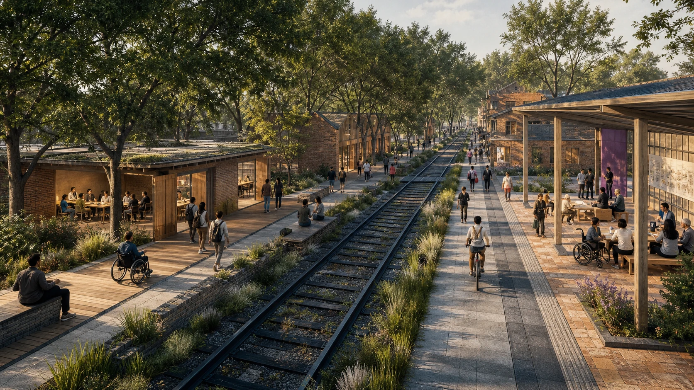
OFFLINE CONCEPT WALK / OFFLINE CONCEPT WALK
This is not a site simulator. It uses one operable diagram to compare three civic relations: who can enter, what they can do, and what must stop when a condition is missing.
Offline · no data · not located, scaled, or engineered
Zhongzhiyuan | Verify — arrive and understand purpose, source, and a human alternative. Pause gate: stop when explanation, human alternative, or review path is missing.
Static counterparts: the three-commons figure, mobility/blue-green figure, scenario cards, five receipts, and structured scene evidence.
A dark slow-mobility, climate, and service spine turns heritage time into daily public structure.
Verification at Zhongzhiyuan, Translation at AI Origin, and Return at Dazhongsi carry distinct civic relations.
Source, test, release, review, return names a purpose, steward, next review, and pause gate for each service.
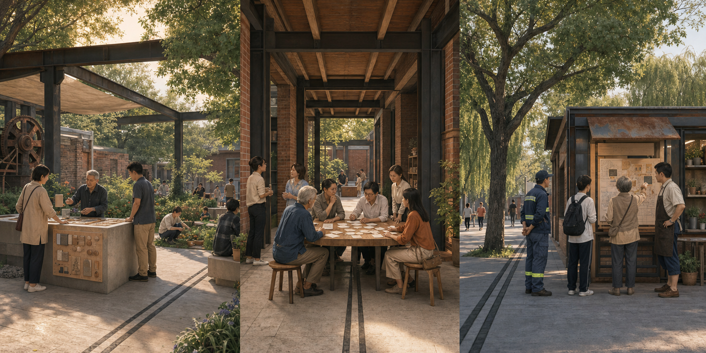
From a shaded verification edge that makes purpose understandable, through a translation arcade where a question can be co-edited, to a return front room that turns care and objection into the next question, the image only makes daily relations perceptible. The key-area diagram, scenario protocol, five receipts, cleared inputs, and professional/user review still carry all spatial, service, and implementation decisions.
Image boundary: Original concept visualization, not evidence of an existing condition, survey, scale, engineering, heritage status, operation, or approval.
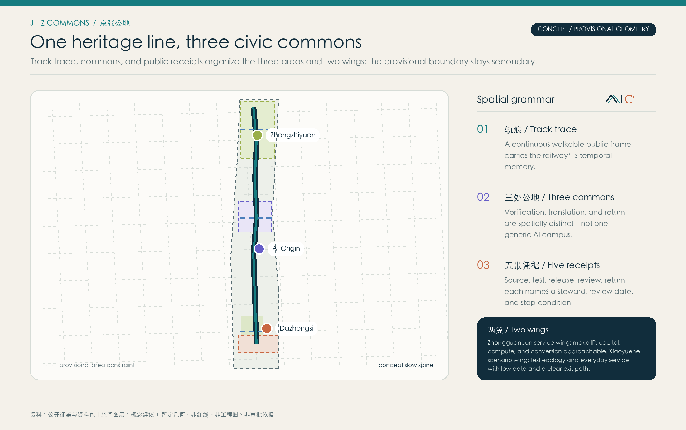
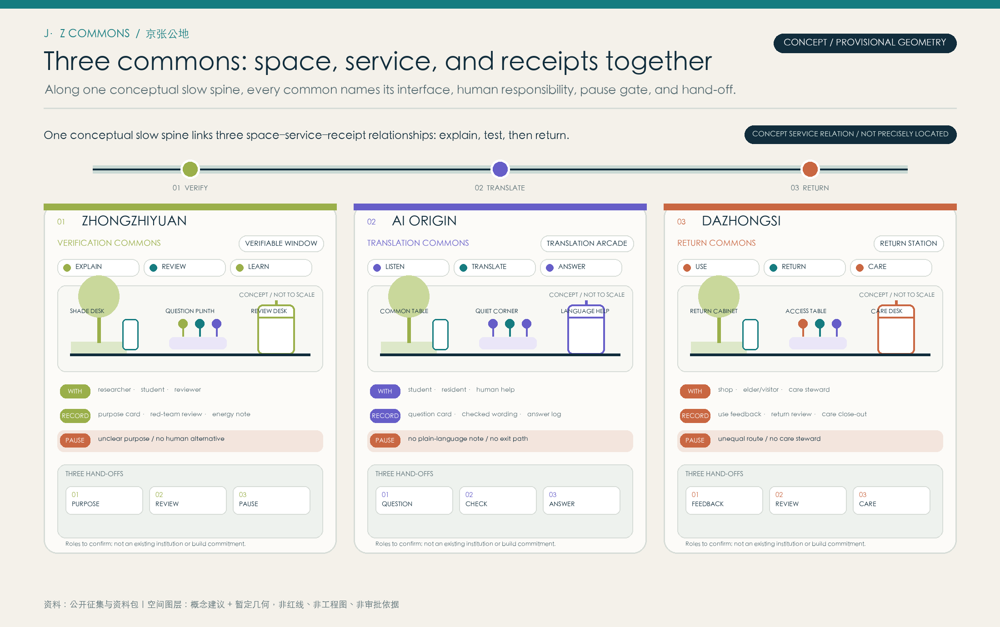
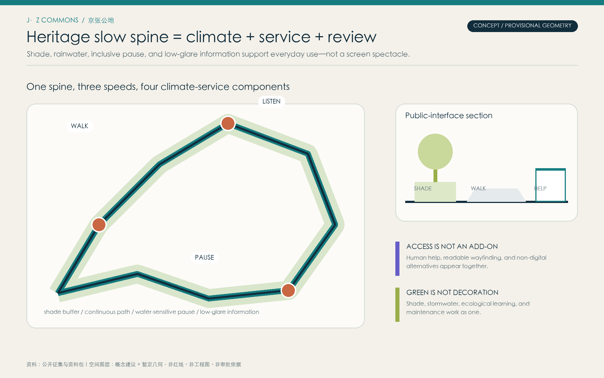
Use Tab and Enter to switch between the three stops. Each combines people, service, and a pause gate.
WITH：researcher, student
SERVICE：model-boundary walk + red-team review
PAUSE GATE：pause if explanation is unclear
WITH：student, resident
SERVICE：common table + multilingual human help
PAUSE GATE：pause without a human alternative
WITH：shopkeeper, carer
SERVICE：return cabinet + care-learning point
PAUSE GATE：pause without a named steward
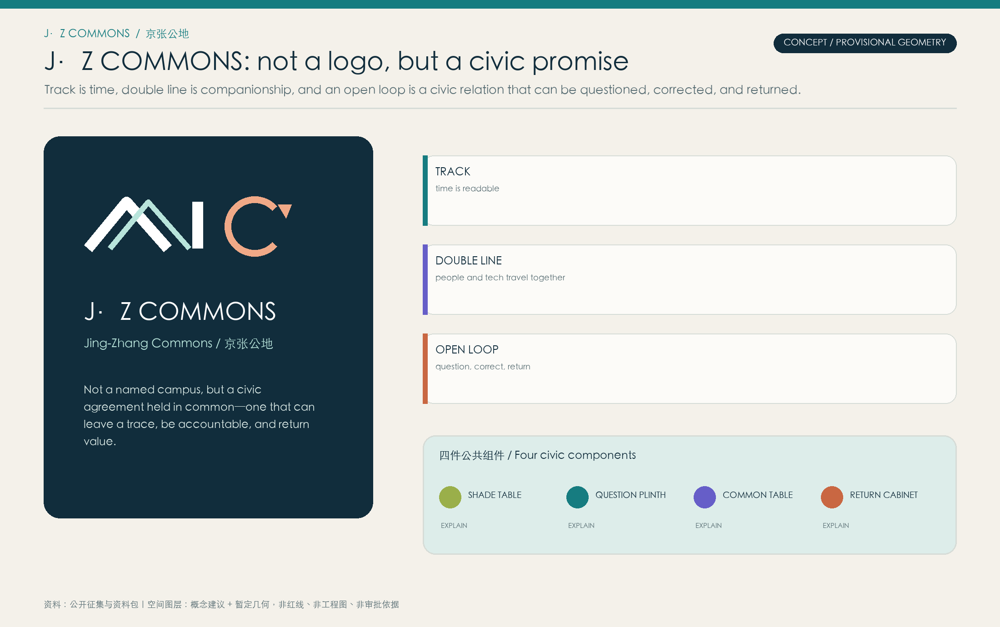
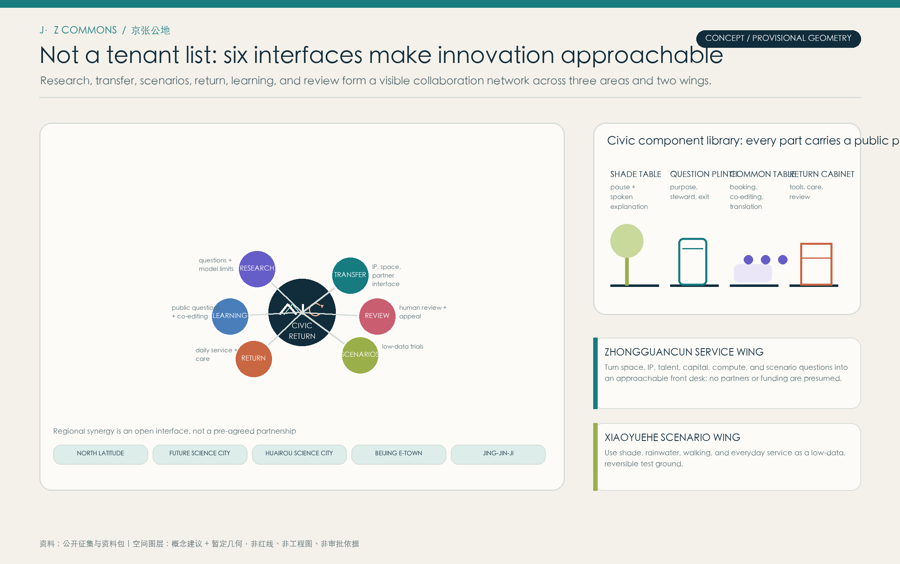
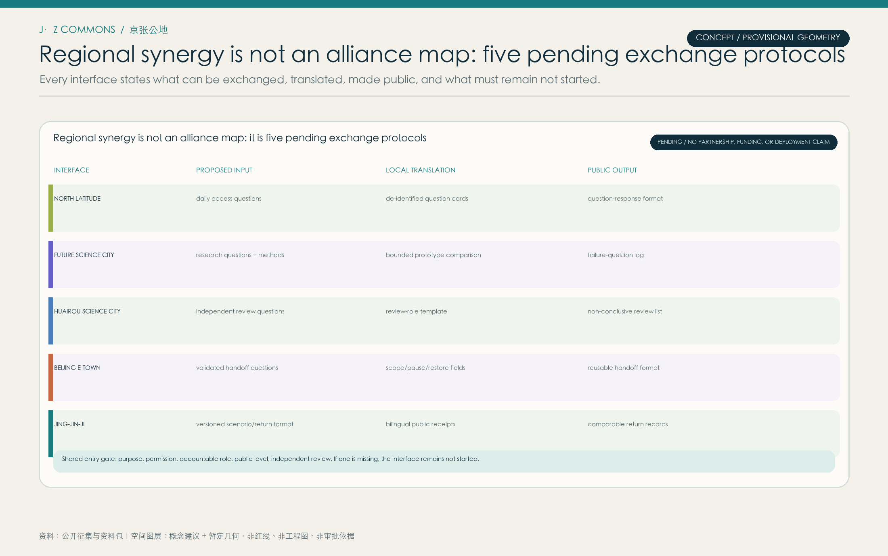
North Latitude, Future Science City, Huairou, E-Town, and Jing-Jin-Ji are not drawn as a completed alliance. Each interface only proposes public questions, methods, formats, and review, with shared gates for permission, accountability, public level, and independence.
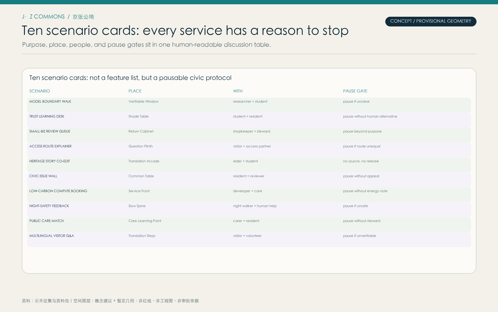
Ten scenario cards put purpose, place, people, and pause gate in one readable table, avoiding an AI feature list with no people or boundary.
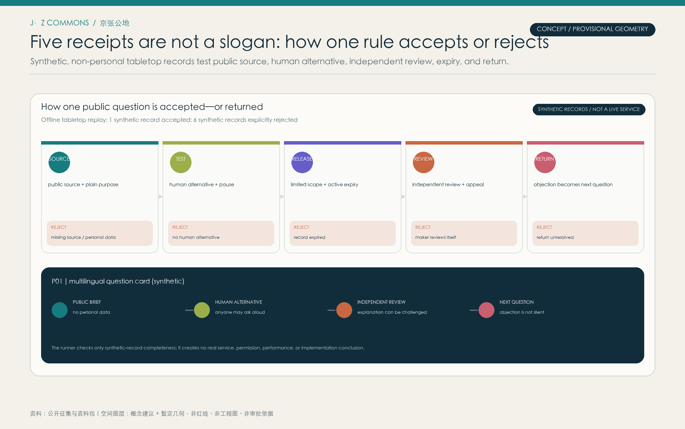
A zero-dependency offline runner checks synthetic, non-personal records: one is accepted and six are rejected for missing source, human alternative, independent review, active expiry, or closed return. It demonstrates replayable rules—not an established field service.
High Line’s reversible public frame → Jing-Zhang track trace
Do not copy image, tourism, or real-estate logicSuperkilen participation → multilingual wayfinding and question cards
Do not transplant objects or graphic vocabularyOodi booking, making, access → Translation Commons
Do not assume the same building or resource baseone-north + Station F → service wing and five receipts
Do not transfer institutions, data, or scaleSmart Kalasatama → representative users and public review
Do not transfer data or governance modelsArs Electronica → Open Ledger Week and bilingual protocol
Do not copy event brand or partnersCheonggyecheon safety/care → Xiaoyuehe scenario base
Do not claim hydraulic or engineering performanceEach review entry leads back to a drawing, prose, geometry, metric, source, or assumption; together they make the concept package traceable.
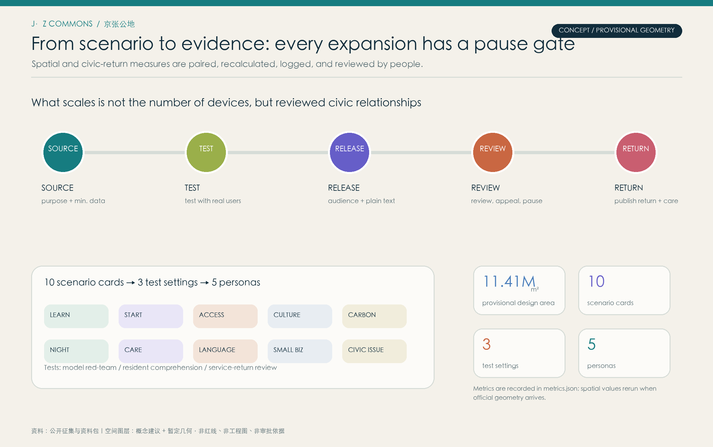
The package delivers spatial data, scenarios, test settings, personas, operating phases, sources, and assumptions together. Recomputable content sits in GeoJSON and metrics.json; discussable content sits in drawings and prose; pause gates sit in the five receipts.